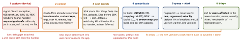

debugging · folio
In one line: A crash reporter is a pipeline: an in-process handler writes the report at the moment of death, the SDK uploads it on the next launch, the server symbolicates it with the artefacts you uploaded for that exact build, fingerprints it into an issue, alerts on new, regressed or fast-growing issues, and a human triages by users affected. Every stage has a way to silently lose the crash.
Download PDF Print view LaTeX source


The two numbers — and three yardsticks
- Crash-free users = 1 - crashed users / all users; crash-free sessions = 1 - crashed sessions / all sessions. Worked: 1 000 users, 5 000 sessions; 10 users crash 20 times → users 99.0 %, sessions 99.6 %. Users = breadth, sessions = frequency; always per version, with a minimum sample.
| a user is | a session is | what counts | |
|---|---|---|---|
| Crashlytics | one install | cold start, or foreground after ≥ 30 min away | fatal only — not ANRs, not non-fatals |
| Sentry | a distinct user | launch / foreground; back within 30 s = same one | ends healthy · errored · crashed · unhandled · abnormal (no clean end: battery died) |
| Play vitals | user × device × day | — (per daily user) | user-perceived (activity shown, foreground service); ANR = input timeouts only |
- Same day, 3 sessions, 1 crash: vitals 100 %, Crashlytics 33 %. Vitals sees only Play installs on certified devices of users who share data; Sentry sessions are never sampled or filtered (crash events ≠ crashed sessions).
- Sentry adoption = a release’s share of all sessions (or users) in the last 24 h — read crash-free next to it: at 1 % adoption it is a small sample.
Grouping — the fingerprint
- Sentry: fingerprint → stack trace (in-app frames only: module, normalized filename, context line) → exception type + value → message.
- Splits: minified JS without source maps, a new wrapper frame, ids or URLs in the message. Merges: every network error through one helper.
- Crashlytics: fatals by stack, variants = same failure point; logged
NSErrors by domain + code — never put ids there. - Fix: fingerprint rules (
{{ default }}+ route), stack-trace rules (wrappers not in-app), merge / unmerge. Sentry’s AI grouping only merges new issues.
Context that makes a crash fixable
- Breadcrumbs: screens, requests (method, route, status — no bodies), taps, lifecycle, memory warnings; Crashlytics takes them from Google Analytics.
- Custom keys: cart size, flag arm, sync state. Crashlytics: 64 pairs (more are not saved), 1 kB each; logs 64 kB, oldest deleted.
- Non-fatals (decode failure, 5xx): Crashlytics keeps the 8 latest per session. Recording unwinds the stack + writes to disk synchronously; on another queue the stack is lost. User id: pseudonymous.
- Consent: Info.plist
FirebaseCrashlyticsCollectionEnabled=NO, thensetCrashlyticsCollectionEnabled(true)after opt-in (persists across launches); reports stored on the device meanwhile are sent once it is enabled.
Example — enrich, then report
let c = Crashlytics.crashlytics()
c.setUserID(account.pseudonymousID) // never email
c.setCustomKeysAndValues(["cart_items": cart.count,
"exp_checkout": flags.checkoutArm])
c.log("checkout: pay tapped") // 64 kB ring
do { try await pay() } catch {
c.record(error: error) // non-fatal
// Sentry instead: split one call site by route
SentrySDK.capture(error: error) { scope in
scope.setFingerprint(["{{ default }}", "/v1/pay"]) } }Alerts and issue states
| Crashlytics | fires when | def. |
|---|---|---|
| new fatal | a crash or ANR never seen before (new non-fatal: same) | off |
| regressed | a closed issue recurs in a version not yet seen when it was closed | on |
| trending | an issue is emerging | on |
| velocity | one issue ≥ 1 % of sessions and ≥ 25 users in 30 min, one version; once per issue + version | off |
- Sentry: new = first seen < 7 days. Plain Resolve: any later event regresses it; in next release (prod 1.8.0, fix merged → only 1.9.0+ reopens). Archive = alerts paused until it escalates. Crash-rate alert: crash-free users or sessions below a set %.
- Route: page on a new fatal or velocity alert in the newest version; ticket regressed, trending, non-fatals. Slack, Jira, PagerDuty are built in.
Deaths no handler sees
- Watchdog / memory kill (iOS): no signal. Sentry infers one at next launch if the last run: didn’t crash · was in foreground · wasn’t the first launch · had no debugger · same app + OS version · wasn’t quit by user or OS.
- iOS hang: a thread pings main (Sentry 2 s; since 9.0.0 split into fully / non-fully blocking); killed during it → fatal hang, sent next launch — Sentry’s app hang rate counts only these. MetricKit
HangDiagnostic(iOS 27;MXHangDiagnosticdeprecated 27.2). - ANR: input unhandled 5 s. RN: a locked JS thread is not one —
ScrollViewstill scrolls on main.
Symbols — upload in CI, per build
| code | artefact | how / trap |
|---|---|---|
| Swift/ObjC | dSYM: dwarf-with-dsym in all configs (default: Release only) | run script = last phase; sandboxed → list Input Files |
| Kotlin/Java | mapping.txt, overwritten every build | Gradle plugin uploads; archive per release |
| NDK | unstripped .so + GNU build ID | nativeSymbolUploadEnabled + upload task |
| JS (RN) | source map (Hermes: composed with hermesc’s) | per build and per OTA: sentry-expo-upload-sourcemaps |
Which tool
| Crashlytics | no-cost; crashes, non-fatals, ANRs (Android 11+); data kept 90 days |
| Sentry | + release health, hangs, replay; custom grouping; self-host (FSL) |
| Organizer | no SDK; sharing users + all TestFlight testers; no watchdog, jetsam or code-signature reports |
| MetricKit | MetricManager (iOS 27; MXMetricManager deprecated 27.2) |
| Play vitals | per daily user; bad ≥ 1.09 % crash, 0.47 % ANR, 8 % one phone |
disableSDKCrashReporting).
Traps
- Debugger attached — it catches the crash first; detach, relaunch to upload.
- 99.9 % overall hiding 100 % for one locale/device — slice first.
- Logging after a recorded error rotates the useful lines out of 64 kB.
- PII in keys, logs, breadcrumbs (emails, tokens, request bodies).
- Session replay: Sentry masks all text, images, input by default — unmask only after custom masks;
onErrorSampleRatekeeps a 30 s buffer.